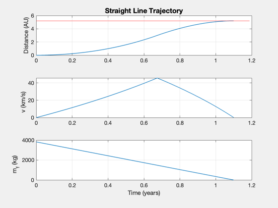
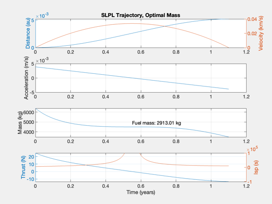

Compare a constant-thrust mission to optimal linear acceleration
First find the constant-thrust solution for a given distance, time, and engine configuration. Then compute the equivalent optimal mission in two cases:
1. the fuel is 100% consumed and the trip is shorter; 2. the trip is the same duration and the saved fuel mass can be extra payload.
See also: Straight2DStructure, ComputeThrust, SLPLSolver, SLPLDataStructure
Contents
%-------------------------------------------------------------------------- % Copyright (c) 2020 Princeton Satellite Systems, Inc. % All rights reserved. %-------------------------------------------------------------------------- % Since version 2020.2 %--------------------------------------------------------------------------
Define the default straight-line scenario
d = Straight2DStructure;
% Compute and display the constant-thrust solution
[thrust,data] = ComputeThrust( d, true );
SimulateStraightLineTrajectory( data );
Report:
---- INPUTS ---- -- --
Payload 1000 kg
Desired distance 5.20 AU
Travel time 1.10 years
---- ENGINE ---- -- --
Thrust Efficiency 0.40
Exhaust velocity 100 km/s
Specific Power 1.00 kW/kg
Fuel Tank Fraction 0.05
---- OUTPUTS ---- -- --
Payload Mass Fraction 0.16 mP/m0
Payload Power Fraction 1.38 kW/kg
Delta-V 91.19 km/s
---- PAYLOAD DEPENDENT ---- -- --
Thrust 11.01 N
Power 1.38 MW
Total Mass 6391.70 kg
Mass Dry 2568.05 kg
Mass Engine 1376.86 kg
Mass Fuel 3823.65 kg
Flow Rate 0.11 g/s
 Compute the faster trip duration for linear acceleration
Find the shorter duration if linear acceleration is used, assuming all fueml is consumed, using the same initial and payload masses
% Leitmann's optimal mass ratios - more engine, less fuel muF = 1 - sqrt(1 - (1-data.mP/data.m0)/(1+data.f)); muP = muF*(1-muF)*(1+data.f); Pj = muP*data.m0*data.sigma*data.eta; % jet power dPL = SLPLDataStructure; dPL.dF = data.dF; dPL.vF = 0; % rendezvous, final velocity is zero dPL.Pj = Pj; dPL.mD = (1 - muF)*data.m0; % dry mass dPL.m0 = data.m0; dPL.tF = []; outPL = SLPLSolver( dPL ); tOpt = outPL.tF; aMax = outPL.A*(d.tF - outPL.tau); fprintf('\nCOMPUTING optimal duration:\n'); fprintf('---- Optimal Inputs ----\n'); fprintf('Distance: %g au\n',data.dF/Constant('au')); fprintf('Initial mass: %g kg\n',data.m0); fprintf('Fuel mass: %g kg\n',data.mF); fprintf('---- Output ----\n'); fprintf('Acceleration: %g m/s\n',aMax); fprintf('Duration: %g days\n',tOpt/86400); fprintf('Time saved: %g days\n',(data.tF-tOpt)/86400)
COMPUTING optimal duration: ---- Optimal Inputs ---- Distance: 5.2 au Initial mass: 6391.7 kg Fuel mass: 3823.65 kg ---- Output ---- Acceleration: 0.00653871 m/s Duration: 351.065 days Time saved: 50.7096 days
Find the higher payload mass, assuming the same trip duration with less fuel
vF = 0; costFun = @(x) data.m0 - SLPLFindMass( d.dF, d.tF, dPL.Pj, vF, data.mD+x ); [deltaM,fval] = fzero( costFun, 500 ); [m0,A,tau] = SLPLFindMass( d.dF, d.tF, dPL.Pj, vF, data.mD+deltaM ); aMax = A*(d.tF - tau); mD = data.mD+deltaM; mF = m0 - mD; mE = Pj/d.eta/d.sigma; mP = data.mD - mE - d.f*mF; fprintf('\nCOMPUTING optimal mass:\n'); fprintf('---- Optimal Inputs ----\n'); fprintf('Distance: %g au\n',data.dF/Constant('au')); fprintf('Initial mass: %g kg\n',data.m0); fprintf('Duration: %g days\n',data.tF/86400); fprintf('---- Output ----\n'); fprintf('Acceleration: %g m/s\n',aMax); fprintf('Fuel mass: %g kg\n',m0 - (data.mD+deltaM)); fprintf('Mass saved: %g kg\n',deltaM) fprintf('New Payload: %g kg\n',mP)
COMPUTING optimal mass: ---- Optimal Inputs ---- Distance: 5.2 au Initial mass: 6391.7 kg Duration: 401.775 days ---- Output ---- Acceleration: 0.00387335 m/s Fuel mass: 2913.01 kg Mass saved: 910.64 kg New Payload: 766.061 kg
Plot the optimal mass solution
[t,x,v,a,m,uE,T] = SLPLTrajectory( A, tau, Pj, m0, d.tF ); [tP,tL] = TimeLabl(t); NewFig('SLPL Trajectory') subplot(4,1,1) yyaxis left plot(tP,x*1e-3/Constant('au')) ylabel('Distance (au)') yyaxis right plot(tP,v*1e-3); grid on ylabel('Velocity (km/s)') title('SLPL Trajectory, Optimal Mass') subplot(4,1,2) plot(tP,a); ylabel('Acceleration (m/s)'); grid on subplot(4,1,3) plot(tP,m); ylabel('Mass (kg)') grid on text(tP(end)/2,m(end)+0.5*(m(1)-m(end)),sprintf('Fuel mass: %g kg',m(1)-m(end))); subplot(4,1,4) yyaxis left plot(tP,T); ylabel('Thrust (N)') yyaxis right plot(tP,uE/0.009806); uE0 = max([uE(1) abs(uE(end))]); yy = axis; axis([yy(1:2) uE0/0.009806*10*[-1 1]]); grid on xlabel(tL) ylabel('Isp (s)') %-------------------------------------- % $Id: bc76c648fef7303984232d794cd067823f4f2dbb $